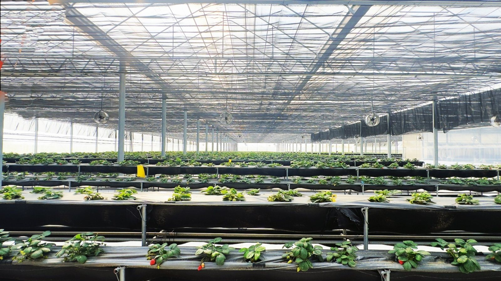

LIVE 植物攝像頭
麻豆一場 · A 區 · 28.4°C · RH 72%
乾淨、好逛、會被分享的企業認養農場。
如鄰農場，看得到照護。
120
認養株數
2
今日 Orbit 照護紀錄
98%
本週照護準時率
三個設計元素
這頁不是農業後台，而是企業客戶願意打開、願意轉傳、看完能安心的認養入口。
乾淨
第一屏只放照片、認養狀態、三筆照護履歷。
體驗
用自有溫室照與像鄰居回報的語氣，降低距離感。
流量
草莓、空拍、認養成果可以直接轉成社群素材。
企業認養只保留四個承諾
把技術藏在背後，把可信任的證據放在前面。
看得到植物
攝像頭作為第一入口，企業客戶不用登入複雜後台。
查得到照護
澆水、施肥、巡場來自 WeGrow Orbit 履歷。
說得出影響力
認養株數、照護準時率、月報可支援 CSR/ESG 對外溝通。
感覺像鄰居
不是冷冰冰數據牆，而是每天有人看顧的在地農場。
最近照護時間線
企業可以一眼知道這些植物今天不是被放著，而是被照顧著。
完成認養區巡場
葉面、根區與滴灌線正常，無需企業端處理。
施肥履歷寫入 Orbit
保留配方、區域、時間與操作人員，可輸出月報。
依濕度狀態補水
避免只照時間表灌溉，改以植株狀態與根區紀錄判斷。
企業認養，不只是贊助。
這是一個可以看、可以查、可以分享的農場參與證明。福農監控平台把衛星農場、企業合約與 WeGrow Orbit 履歷合在同一個極簡頁面。
下一版可接真實資料
目前頁面已預留攝像頭、Orbit 履歷與企業合約欄位。正式串接時，只需把示意資料換成 API 或攝影機串流。
攝像頭來源
替換為企業認養區 RTSP/HLS/iframe 串流。
ready
WeGrow Orbit 履歷
串接澆水、施肥、巡場、病蟲害紀錄。
ready
企業月報
認養成果、照片、照護紀錄與 CSR 摘要。
ready